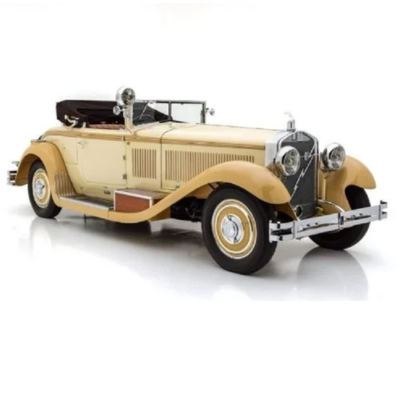

CAR

Beige 1928 Vintage Car Castagno Roadster
Color - Beige
Mileage - 14 Kmpl
history
Seating Capacity - 2 Seater
Popularised during the 1950s and 60s
A roadster (also spider, spyder) is an open two-seat car with emphasis on sporting appearance or character.
Roadster will achieve a 60-mph time of less than one second
MGB Roadster (513,276)
- cbe
- salem
- chennai
- eroad
click here